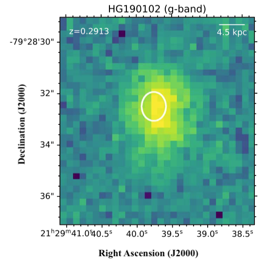

FRB 190102
Image from Bhandari et al., 2020, ApJL, 895, 37
Summary
- Detected by: ASKAP-ICS
- FRB coordinates (RA, Dec): 21:29:39.72 -79:28:32.2 (J2000)
- Host coordinates (RA, Dec): 21:29:39.76 -79:28:32.5 (J2000)
- Redshift: 0.2912
- Observed DM: 364.5 pc cm-3
- Repeating: No
- References: Macquart et al., 2020, Nature, 581, 391;
Bhandari et al., 2020, ApJL, 895, 37;
Day et al., 2020, MNRAS, 497, 3335;
Heintz et al., 2020, ApJ, 903, 152
Host galaxy properties
| Quantity | Measured value | Unit |
|---|---|---|
| Stellar mass | (3.39 ± 1.02) × 109 | M⊙ |
| Star-formation rate | 0.86 ± 0.26 | M⊙/yr |
| Metallicity | 8.70+0.07-0.08 | 12+log(O/H) |
| E(B-V) | 0.20 ± 0.10 | mag |
| Mass-weighted age | 55.65 | Myr |
| Absolute r-band mag. | -19.85 ± 0.06 | mag |
| u - r color (rest-frame) | 1.40 ± 0.12 | mag |
| Half-light radius | 4.43 ± 0.51 | kpc |
| FRB offset from galaxy center | 2.02 ± 2.18 | kpc |
Emission line fluxes
| Emission line | Measured value |
|---|---|
| Hα | 5.66 ± 0.17 |
| Hβ | 1.90 ± 0.17 |
| Hγ | 1.07 ± 0.20 |
| [OII] λ 3726 | 3.20 ± 0.28 |
| [OII] λ 3729 | 4.21 ± 0.30 |
| [OIII] λ 5007 | 3.80 ± 0.27 |
| [NII] λ 6584 | 1.69 ± 0.19 |
Photometry
| Telescope | Filter (eff. wavelength) | Magnitude (AB) |
|---|---|---|
| VLT/FORS2 | u (361 nm) | 22.77 ± 0.20 |
| VLT/FORS2 | g (470 nm) | 21.87 ± 0.10 |
| VLT/FORS2 | I (768 nm) | 20.77 ± 0.05 |
| VLT/FORS2 | z (910 nm) | 20.54 ± 0.20 |
| HST/WFC3 | F160W (1.6 μm) | 20.451 ± 0.006 |